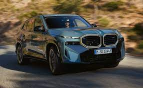
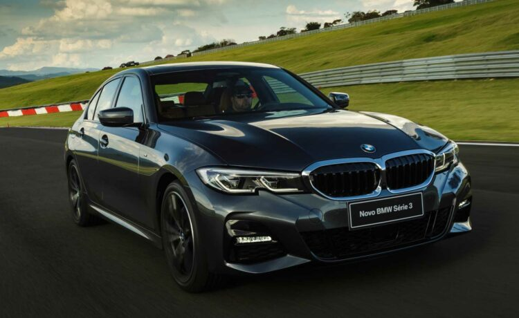

-"o melhor do mundo" O XM escreve a história ao ser primeiro veículo legitimamente M equipado com conjunto mecânico híbrido PHEV.
Diferente do primeiro M puro da história, o segundo é bem pesado.
São 2.750 kg distribuídos quase na proporção 50:50. É o BMW mais pesado já feito
A primeira geração do BMW Série 3 foi apresentada ao mundo em julho de 1975, e permaneceu no mercado até 1983.
O design da carroceria deste modelo foi obra de Paul Bracq, que foi chefe de design da BMW entre 1970 e 1974.
Ele também criou outros carros, como o protótipo BMW Turbo que resultou no lendário BMW M1.

